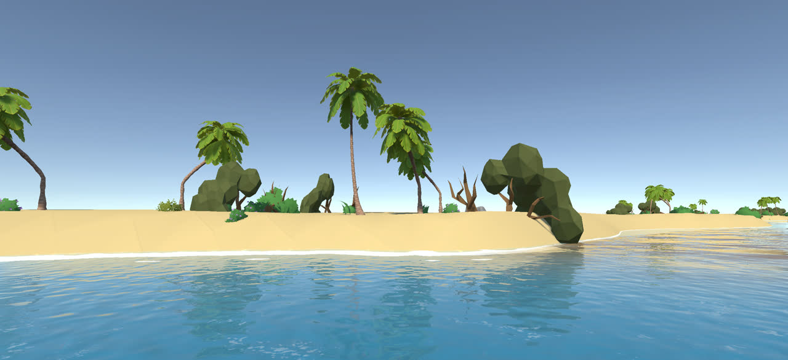
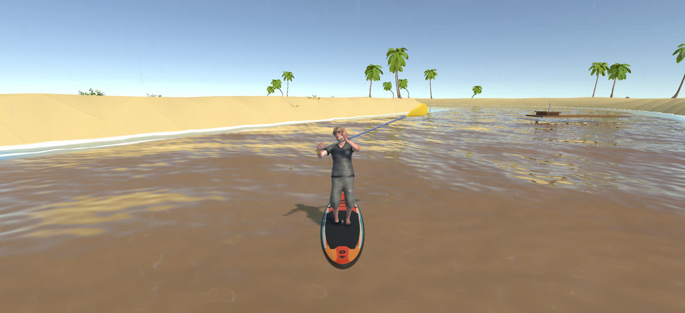
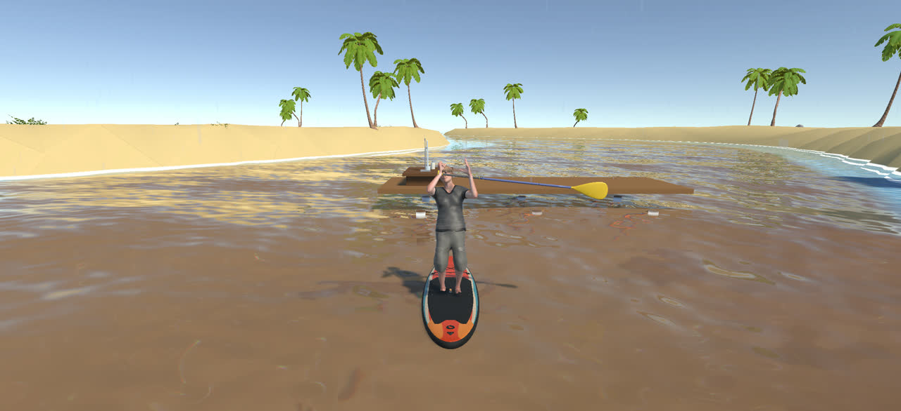
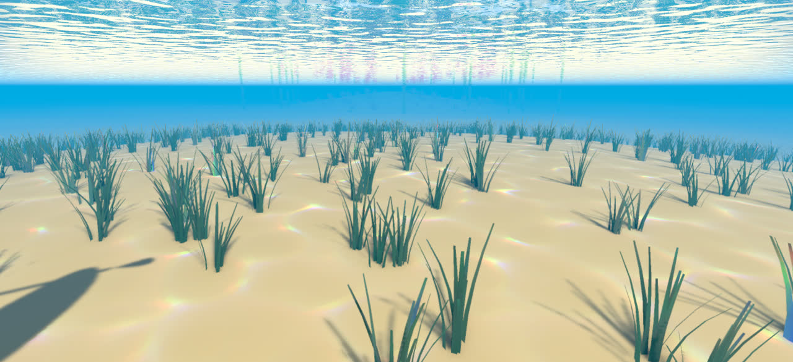
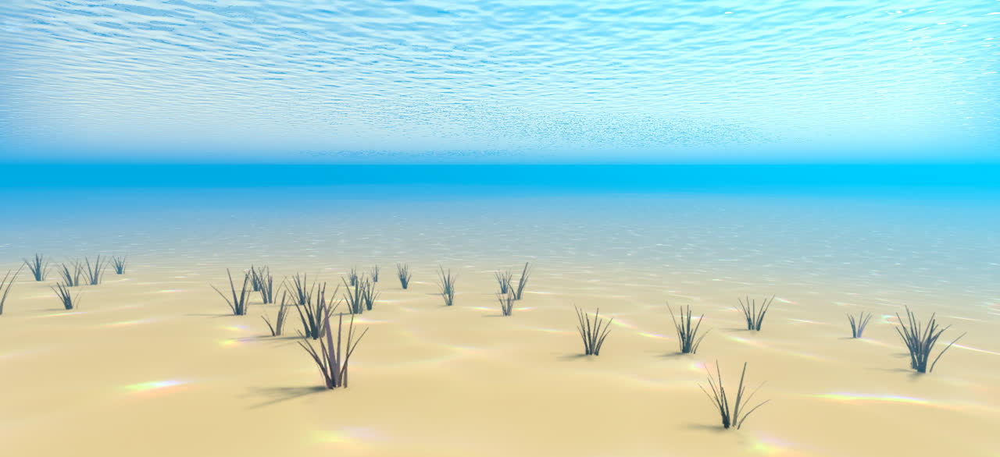
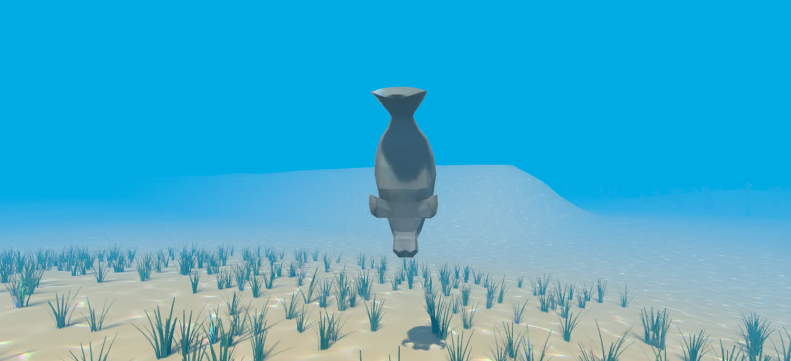
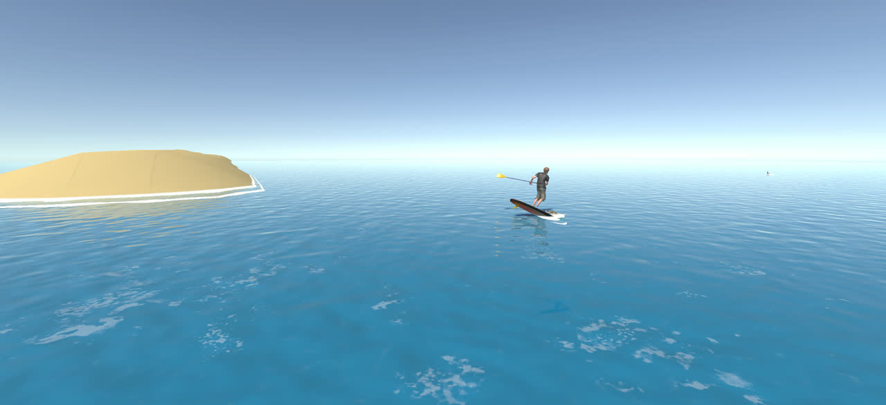
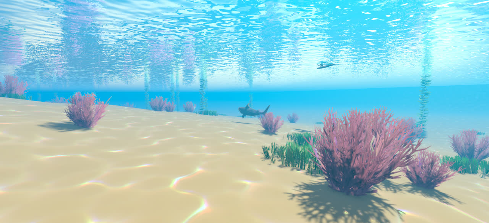
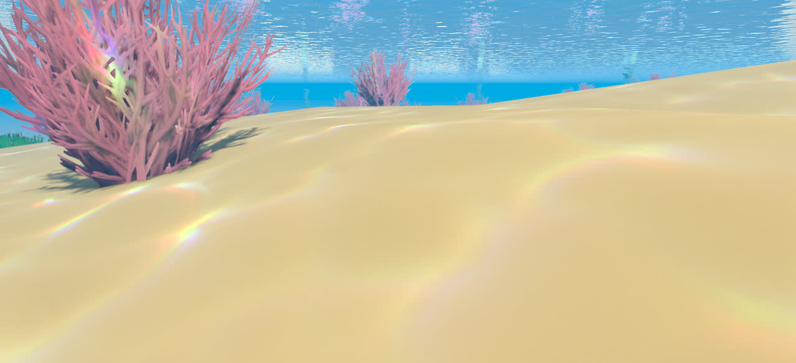
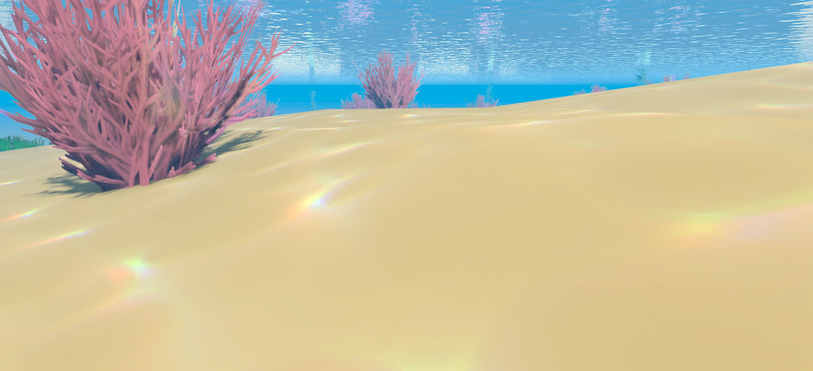

One trip, one drop of water
In Spring to Sea you paddle a stand-up board the way rain water travels across Florida: up out of the ground at a spring, down a dark river, across a shallow lagoon full of seagrass, out through an inlet and on to a coral reef. Alastair, a dog with strong opinions, rides on the front of the board. He likes the spring. He does not like the ocean.
The water changes at every stop, and so does its pH. Each change has a cause that belongs to a different science: rocks, plants, animals, even the Moon. The chemistry of acids and bases (Chapter 14 of your textbook) is how you measure what is going on.
pH along the way. Each stop's usual pH range, drawn on the same color scale your pH paper uses in the game. Click a stop's name to jump to it. The spring, river and reef ranges come from the sources in those sections; the lagoon and inlet ranges are rough typical values, since they shift with the tide and the time of day.
The spring Geology

Florida sits on a thick layer of limestone, rock made mostly of calcium carbonate, CaCO3 []. Underground, that limestone is full of cracks and channels filled with water. This water-filled rock is the Floridan aquifer system, and Florida's springs are the places where its water comes out at the surface [] [].
Rain does the digging. Rain water carries carbon dioxide, which forms carbonic acid, a weak acid that slowly dissolves the rock []. Over a very long time this widens cracks into caves, sinkholes, springs and streams that sink underground. Land shaped this way is called karst [].
Because spring water comes from deep underground, its temperature hardly changes: most Florida springs stay at about 70–75 °F (21–24 °C) all year []. In summer a spring feels cold; in winter it feels warm.
Chapter 14 at the spring · Section 14.1
Carbon dioxide reacts with water to form carbonic acid. It is one of the acids you'll name in the game, together with HCl (hydrochloric acid), NaOH (sodium hydroxide) and Ca(OH)2 (calcium hydroxide).
CO2(g) + H2O(l) → H2CO3(aq)
You'll also test water with litmus: acids turn blue litmus paper red, and bases turn red litmus paper blue. Acids taste sour; bases taste bitter and feel slippery (never taste anything in a real lab).
The blackwater river Botany and ecology

Many Florida rivers begin by draining swamps and marshes. As the water seeps slowly through these wetlands, fallen leaves and other plant matter soak in it and release tannins and other dissolved organic matter []: the same kind of plant chemicals that color a cup of tea.
The tannins turn the water a dark, tea-brown color and lower its pH []. The result is a blackwater river: dark, yet often clean, and naturally acidic, usually between pH 4.0 and 6.0 []. The upper Suwannee River is a Florida example []. Plants, and the microbes that break them down, set the river's chemistry: botany and ecology, written in chemistry.
Strong acid or weak acid?
The river's plant acids are weak: only a few of their molecules hand a proton (H+) to water. A strong acid gives away all of them. Switch between the two and count the ions. (A drawing, not real numbers.)
Key: HA acid molecule · H3O+ hydronium ion · A− the acid's leftover ion
Chapter 14 on the river · Sections 14.3, 14.7 and 14.8
Only six common acids are strong: HCl, HBr, HI, HNO3, H2SO4 and HClO4. Every other acid, including carbonic acid and the river's plant acids, is weak. Acid rain brings two of the strong ones, H2SO4 and HNO3.
At the titration dock you'll find how much acid is in a river sample. You add a standard NaOH solution (one whose molarity you know) from a buret, a drop at a time, until the indicator phenolphthalein turns the faintest pink that stays. That is the end point: just enough base to neutralize all the acid.
Worked example (made-up numbers; the game gives you your own):
A 25.0 mL river sample needs 18.5 mL of 0.100 M NaOH.
moles NaOH = 0.100 mol/L × 0.0185 L = 0.00185 mol, so moles of acid = 0.00185 mol (they react one to one)
molarity of acid = 0.00185 mol ÷ 0.0250 L = 0.0740 M

The seagrass lagoon Marine biology and ecology

Where rivers meet the sea, fresh water and seawater mix into brackish water; places like this are called estuaries []. Florida's Indian River Lagoon, on the Atlantic coast, is one. Its shallow floor is covered by seagrasses, plants that grow completely underwater, and seagrass is a major food source for manatees [].
Like every plant, seagrass runs on photosynthesis. When living things photosynthesize, they remove carbon dioxide from the water; respiration, which goes on day and night, puts it back and lowers the pH. So shallow coastal waters follow a daily cycle: pH goes up during the day and down at night []. In Tampa Bay, seagrass beds have been measured raising the pH of the water around them [].
Day and night in the meadow
Switch between day and night. Watch which way the carbon dioxide moves, and what that does to the pH. (A drawing; the arrows show direction, not amounts.)


Chapter 14 in the lagoon · Section 14.2
A Brønsted–Lowry acid donates a proton (H+); a base accepts it. When carbonic acid gives a proton to water, water is the base:
H2CO3 + H2O → HCO3− + H3O+
An acid and the particle it becomes after losing one proton form a conjugate acid–base pair: H2CO3/HCO3− and H3O+/H2O. Bicarbonate, HCO3−, can act both ways: it can give a proton (becoming CO32−) or take one (becoming H2CO3). In the game you'll snorkel down and catch the proton: touch the donor, then the acceptor.
The inlet Physics and astronomy

An inlet is a gap in a barrier island that joins a lagoon to the ocean. On the rising (flood) tide, ocean water pours in through the gap; on the falling (ebb) tide, lagoon water drains back out. The water rushing through can be fast and rough: perfect for a surf ride.
Tides are gravity at work, and the Moon is the main force behind them []. It pulls hardest on the side of Earth facing it and least on the far side, so the ocean bulges out on both sides. As Earth turns, a coast passes through both bulges, which gives the East Coast its usual pattern of two high tides and two low tides a day []. The Sun's tide-making force is about half the Moon's []. At new and full moon the Sun and Moon line up and the tides are biggest: spring tides. At the first and third quarter moon they pull at right angles and the tides are smallest: neap tides [].
Fresh, brackish, salty
Ocean scientists measure saltiness, or salinity, in parts per thousand (ppt). Seawater typically holds close to 35 grams of dissolved salts in each liter: 35 ppt [].
- Fresh water (spring, river): below about 0.5 ppt.
- Brackish water (lagoon, inlet): from about 0.5 up to 35 ppt, changing with the tide [].
- Seawater (reef): about 35 ppt.
Salinity and pH are different measurements: one counts salt, the other hydronium ions.
Move the Moon, make the tides
Earth is seen from above the North Pole, with the Sun far off to the left. Change the day of the Moon's month and the hour of the day, and watch the ocean bulge and the tide at the inlet. (A drawing: the bulges are exaggerated a lot.)
Water level at the inlet over this day, midnight to midnight. The dot is the hour you picked.
The reef Marine biology

A coral reef looks like rock, but animals build it. Each coral is a colony of tiny animals called polyps, and each polyp secretes a hard skeleton of limestone, calcium carbonate: the same compound as the rock under Florida's springs []. Living inside the polyps are microscopic algae called zooxanthellae, which photosynthesize and share the products with the coral []. When corals are stressed, for example by water that is too warm, they expel the algae and turn white: coral bleaching [].
Florida is the only state in the continental United States with extensive shallow coral reefs near its coasts []. Those corals now face a slow change in the chemistry of the water around them.
Ocean acidification, one step at a time
- More CO2 in the airfrom burning fossil fuels.
- The ocean absorbs itabout a quarter to a third of the CO2 people release [] [].
- It forms carbonic acidCO2 + H2O → H2CO3, the same reaction as at the spring [].
- More H3O+, lower pHsurface pH has fallen by about 0.1 since the industrial revolution began [].
- Fewer carbonate ionsH3O+ turns CO32− into HCO3−.
- Harder to build shellscorals, clams and oysters need carbonate for their shells and skeletons [] [].
Seawater does not change pH easily. Its carbonate and bicarbonate ions soak up added acid and help it resist large changes in pH: seawater is a buffer []. But every bit of acid the buffer absorbs turns carbonate into bicarbonate, and that carbonate is exactly what corals and shellfish need.
Water or buffer? Add acid and see
Two beakers. On the left, plain water. On the right, a buffer: the weak acid H2CO3 with its conjugate base HCO3−, the pair that helps buffer seawater and your blood. Add acid or base one drop at a time and watch where the extra ions go. (A drawing: each shape stands for many particles.)
Key: ▬ H2CO3 · ● HCO3− · ● free H3O+ · ● free OH−
How much more acid is a "small" pH drop?
Slide the ocean's pH. The bars compare the hydronium ion concentration, [H3O+] = 10−pH, with the ocean before the industrial era.


Chapter 14 at the reef · Sections 14.6 and 14.9
pH = −log[H3O+], and going back, [H3O+] = 10−pH. Every whole pH unit is a factor of ten, so even a drop of 0.1 means 100.1 ≈ 1.26 times as much H3O+: about a quarter more. (Agencies round the ocean's change to "about 25%" or "about 30%" more acidic [] [].)
Significant figures: the number of decimal places in a pH equals the number of significant figures in the concentration. [H3O+] = 7.9 × 10−9 M (two significant figures) gives pH = 8.10 (two decimal places). The game's digital meter reads two decimals for this reason.
A buffer is a weak acid together with its conjugate base. It resists changes in pH because each half neutralizes one kind of intruder: the conjugate base takes up added acid, and the weak acid takes up added base.
HCO3− + H3O+ → H2CO3 + H2O (acid added)
H2CO3 + OH− → HCO3− + H2O (base added)
Your blood is held between pH 7.35 and 7.45 with the help of this same bicarbonate buffer []. A strong acid cannot make a buffer: its conjugate base, like Cl− from HCl, does not take a proton back.
Your gear and how to play
Predict, then measure. Every time you scoop a water sample you first predict: acid, neutral or base? Then you measure it. Predictions don't have to be right, but right ones earn bonus points, and the game counts them.
pH paper first, a meter later. At the spring and on the river you read samples with pH paper and a color chart, to the nearest whole number. Clear the seagrass stop and you earn a digital pH meter that reads two decimals, in time for the reef.
Ask Alastair. Each question has one hint from the dog. A question answered with his help scores half points.
Finish the trip and the summary gives you a completion code to enter in D2L, with the photos you took on the way.
| Key | What it does |
|---|---|
| W A S D | Paddle forward and back, turn left and right |
| Right mouse | Hold and drag to look around; scroll to zoom |
| C (hold) | Dip the camera under the surface |
| E (hold) | Anchor and snorkel, or climb back on |
| R | Scoop a water sample (predict, then measure) |
| Q | Start a stop's questions when you're close |
| P | Take a photo for your trip summary |
Check yourself
Not graded. Pick an answer to see whether it's right and why; you can change your answer as often as you like.
Ready? Grab your paddle, check that Alastair is on board, and head for the spring.
Start paddlingSources
Pictures on this page are screenshots from the game. Diagrams are drawn for this page and are not to scale.